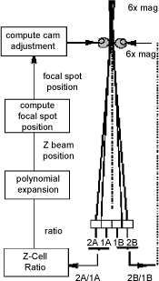
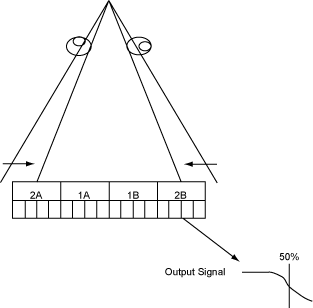
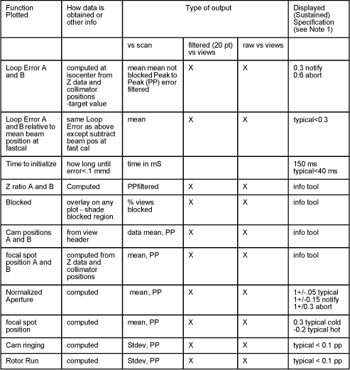
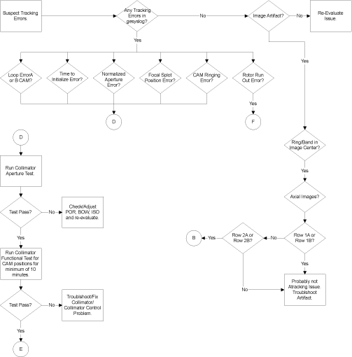
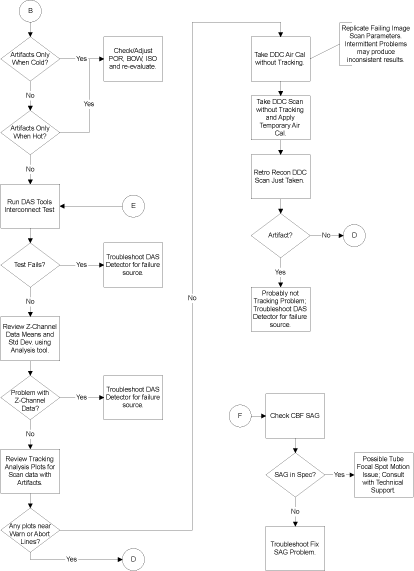

Proprietary to General Electric
Direction 5193755-800, Rev# 8
BrightSpeed (Ltd. Access) Service Methods - Adv
Proprietary to General Electric |
Estimated Completion Time: 1 to 5 hours
Refer to “Gantry Controller Area Network (CAN)” (especially: subsections “Z-Axis Tracking Overview,” “Collimator Tracking Control Loop Theory,” “Tracking Loop Variables,” “Special Tracking Characterizations” and “Diagnostics Related to Z-Axis Tracking”) in Collimator Theory of Operation, for additional information related to Z-Axis Tracking.
The purpose of z-axis tracking is to follow the focal spot so that the system can keep the uniform portion (umbra) of the x-ray beam for the narrowest possible beam on the detector to reduce dose and still avoid artifacts. The focal spot moves in the Z-axis due to thermal changes in the tube, mechanical forces during gantry rotation and due to gantry tilt angle.
Illustration 1: Z-Axis Tracking Block Diagram

Z-Axis Tracking takes advantage of the QX/i x-ray Collimator’s ability to independently control the cams that set the z-axis beam thickness and the QX/i x-ray Detector’s ability to sense the z-axis edges of the x-ray beam.
A logically separate detection and control feedback loop is used for each cam’s position. The tracking design treats the A and B Cams as independent mechanisms used to control the ‘z’ thickness of the x-ray beam.
The applications or ‘run time’ system operation sets an initial location for each of the cam’s based upon the selected acquisition mode similar to QX/i’s original 1.0 Software implementation. The initial cam positions are set wide enough to ensure that the x-ray beam will fully flood the selected area of the detector.
Once the x-ray exposure starts the tracking loops for the ‘A’ and ‘B’ cams will: independently detect the edges of the x-ray beam, calculate the position of the tube’s focal spot, calculate a new position for the ‘A’ and ‘B’ cams, and move the cams to the new position.
During the course of the x-ray exposure the Cam positions are updated every 20 milliseconds until the exposure ends.
Troubleshooting Strategy - Service actions for repair can be broken down into four activities defined as:
Detect: Error Messages or Image Artifacts
Diagnose: Diagnostics, Tools
Correct: Adjustment, Replacement
Verify: Scan Error Free
For X-Ray Beam Tracking Troubleshooting flowcharts, see Illustration 4 and Illustration 5.
Detection of hardware faults for Z-Axis Tracking is expected to take place in the run-time or application software. The Collimator and DAS hardware incorporate features that provide feedback as to normal and out-of-bounds operation. This includes subsystem communications link integrity checking, command feedback, and operating status. This functionality should provide good runtime monitoring for out of specification conditions in the tracking loop.
Within the collimator, rotary optical encoders mechanically attached to each of the cams provide positional feedback. This feedback coupled with a factory created Cam Encoder position database assures accurate positioning of the Cams. Since this mechanism relies on the accuracy of the collimator calibration database an independent means to test the cam position accuracy was developed and is used.
Illustration 2: X-Ray Beam Tracking Diagnosis

The X-ray beam tracking fault diagnosis should combine: error messages, diagnostic tests, verification of alignments, and analysis of data using system tools.
Collimator Aperture Test
The Collimator Aperture Test uses the detector to ‘see’ the edge of the collimated x-ray beam in the ‘z’ axis and relate that to where the collimator mechanism has positioned the cams.
The detector cells used for this test are not the ‘z-channel’ cells used for the run-time z-axis tracking. This allows confirmation that the collimator control loop can control the collimator cams independent of the detector z-channels and that the detector DAS combination can correctly detect and communicate the edge of the x-ray beam.
This test method depends upon the fixed mechanical dimensions of the detector and the detectors fixed mechanical relationship to the x-ray tube. The other factors are the relationship between detector cells signal output and the amount of x-rays striking the detector cells. The test starts a x-ray exposure with the cams positioned in such a way that the detector cells should be fully flooded with x-rays. The cam position is then changed until the monitored detector cells output drops to 50% of the detector row’s fully flooded output level. Because of the fixed mechanical relationships for the tube detector and their distances from one another, we can determine how many encoder counts should be required to get to the 50% cell output position. This number is compared with the actual number of encoder counts just moved in order to determine if the positioning accuracy is within specification. The Collimator Aperture Test provides Pass/Fail results.
In summary: The Collimator Aperture test verifies that the collimator control circuitry can correctly control the collimator cams independently of the detector z-channels.
Collimation and Filtration Functional Test
The Collimation and Filtration Functional Test is used to verify that the collimator electro-mechanical elements can operate in a repeatable manner. This test commands the collimator electronics to move the cams and beam shaping filter to specific locations in their operating range checking the actual encoder counts to the expected position counts. Discrepancies result in error reports detailing the discrepancy.
DAS Tools Interconnect Test
Tracking Analysis Tool
Tracking Analysis General Information
The Tracking Analysis Tool provides detailed information regarding closed loop performance that is obtained from analysis of patient scan data.
This is necessary to assess the health of the tracking loop and to associate artifacts with tracking abnormalities.
What does Tracking Analysis Provide?
For each scan data set available in the scan file database, the analysis package can plot various data vs the scan.
For each scan data set available in the scan file database, the analysis package can various data vs views in a default filtered (20 pt boxcar) or unfiltered format.
The type of data plotted and its presentation vs scans and vs views is given in the table shown in Illustration 3.
When data is plotted vs views, the numerical information (plotted vs scans) is displayed. Pass/ fail criteria is indicated if possible.
Loop Error Plot
Loop error is the difference between the calculated position of the beam minus the desired target position (operating point). The calculation requires data from the z-channels and from the DAS Gain Cal results.
Loop Error Relative to Fast Cal Beam Position Plot
Same as “Loop Error Plot,” above, except that the display represents the loop error relative to the mean beam position during fastcal. The fastcal beam position is stored in calibration database.
Time to Initialize Plot
Compute the time required for the absolute value of the filtered Loop Error to be < 0.1 mmd. Time depends on magnitude of initial error but in all cases should be tracking to position within 150 ms.
Z-Ratio Plot
Compute the Z ratio ‘R’ as described for the loop error computation in “Loop Error Plot,” above.
Blocked Z module Plot
Compute the views where a blocked z-channel condition occurs. The calculation requires: mA DAS count value from the auxiliary channel input, DAS trigger frequency, DAS gain factor for channel 762 from DAS Gain Cal, and Blocked Channel scale factor determined during fast cal.
The % blocked value per scan is the number of blocked views divided by the total views x 100.
Cam Positions Plot
Obtained the cam positions from the scan file view header.
Focal spot Position Plot
The calculated focal spot position.
Normalized Aperture
The calculated normalized aperture.
Cam Ringing
Cam ringing is computed to provide a plot of the high frequency variations that are 180 degrees out of phase such as typical cam ringing. A spec is not available but typical expected values are less than 0.1 mmf
Rotor Run
Rotor run is computed to provide a plot of the high frequency variations that are in phase such as the small periodic movement of the anode at the rotor run frequency. A spec is not available but typical expected values are less than 0.1 mmf.
Illustration 3: Tracking Information Plots

| NOTE: | For a scalable, full size version of the flowchart shown below, click on the PDF icon. |
Media File 1: Full Size Illustration: X-Ray Beam Tracking Troubleshooting Flowchart

Illustration 4: X-Ray Beam Tracking Troubleshooting Flowchart, part 1 of 2

Illustration 5: X-Ray Beam Tracking Troubleshooting Flowchart, part 2 of 2

END OF PROCEDURE